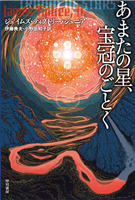
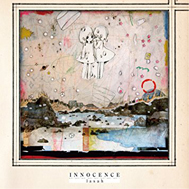

16歳の少女コーティーは、誕生日に貰った宇宙船で星々の世界への冒険へ旅立つ。
そこで出会った宇宙生命体シロベーンとの友情、そして拾った通信カプセルを追って辿り着いた遭難船のある惑星。
その先で彼女が知ってしまった秘密と、彼女が選んだ「たったひとつの冴えたやりかた」とは――。
ローカス賞、および星雲賞海外短編部門受賞作。SFのオールタイムベストランキングなどでも上位の常連である、ティプトリー
晩年の代表作。書評において「この小説を読み終わる前にハンカチがほしくならなかったら、あなたは人間ではない」という
名文句を生んだ作品でもある。
ヒューマン(人類)の歴史を調べる異星人の学生たちが、図書室へ資料を借りにくるかたちで表題作含む
3つのお話を紐解いてゆきます。サイエンスフィクションというよりファンタジーに近く、ドラマチックな展開と奥深い世界観がおすすめです。
ジェイムズ・ティプトリー・ジュニアはペンネームであり「女性というだけで不等な扱いを受けてきた」という理由で
長らく本人が公の場にでることはなく、謎の多い作家であった。彼女がSF小説界にもたらした功績は多く、のちにジェンダーへの理解へ貢献したSF作品に送られるジェイムズ・
ティプトリー・ジュニア賞が創設された。

